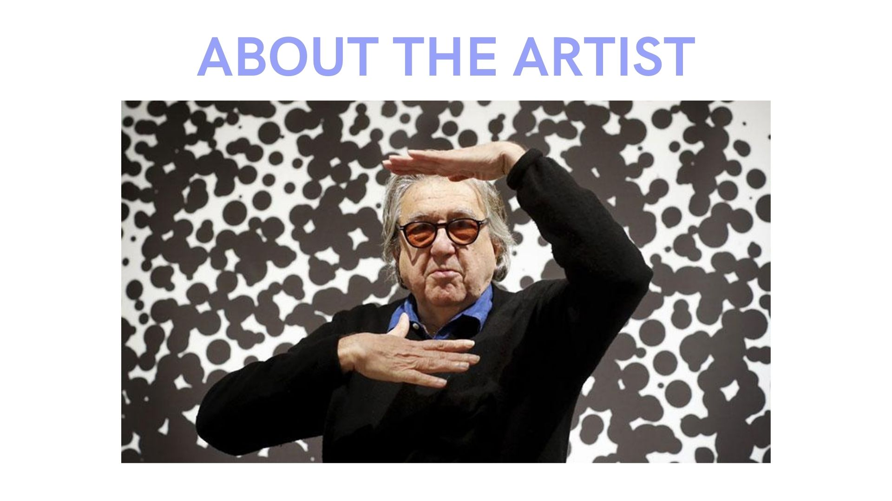

ABOUT THE ARTIST: ANTONI MUTANDAS
- Postconceptual Multimedia Artist
- Born in Barcelona, 1942
- Resides in New York since 1972
- His work often addresses social, political and communications issues through different media: such as photography, video, text and image publications, the Internet, and multi-media installations
